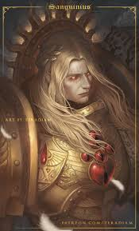

Sanguinius
Sanguinius, conhecido como o "Anjo", o "Brilhante" e o "Filho Favorito", é o Primarca da IX Legião, os Blood Angels. Ele é amplamente considerado o mais nobre, amado e heróico de todos os Primarcas, possuindo uma pureza que inspirava até mesmo seus irmãos mais cínicos. Sua figura é o símbolo máximo de sacrifício e esperança dentro do Império.
Quem é Sanguinius?
Sanguinius aterrissou em Baal Secundus, uma lua devastada por radiação e mutantes. Ele nasceu com um par de asas angelicais brancas, uma mutação que, em qualquer outro lugar, o condenaria à morte. No entanto, ele foi acolhido por uma tribo de humanos puros e rapidamente se tornou seu salvador. Diferente de muitos irmãos que conquistaram seus mundos pelo medo ou pela força bruta, Sanguinius foi adorado como um deus vivo. Quando o Imperador o encontrou, Sanguinius ajoelhou-se imediatamente, reconhecendo seu criador, mas temia que o Imperador o eliminasse por sua mutação. Em vez disso, o Imperador o nomeou um de seus generais mais próximos.
Principais Características:
Nobreza e Empatia: Ele possuía uma aura de bondade que acalmava os mortais e transumanos ao seu redor. Era o "rosto" ideal para a Grande Cruzada.
Precognição Trágica: Assim como Curze, Sanguinius tinha visões do futuro. A diferença é que, enquanto Curze se entregou ao desespero, Sanguinius lutou para mudar o destino, mesmo sabendo que sua morte era inevitável.
A Fúria Oculta: Por trás da aparência angelical, Sanguinius escondia uma ferocidade terrível em combate e um segredo genético: a "Sede Vermelha" (Red Thirst), uma instabilidade em seu DNA que ele temia que destruísse sua Legião.
Habilidade de Voo: Suas asas não eram apenas ornamentais; ele era um mestre do combate aéreo, movendo-se com uma graça impossível no campo de batalha.
Principais Feitos:
A Batalha de Signus Prime: Ele liderou sua legião em uma armadilha armada por Horus e pelo demônio Ka'Bandha. Sanguinius enfrentou o demônio maior de Khorne em um duelo que testou sua sanidade e força física, saindo vitorioso e protegendo seus filhos da corrupção total do Caos.
Eternity Gate: Durante o Cerco de Terra, Sanguinius realizou o feito defensivo mais famoso do Império. Ele defendeu sozinho o Portão da Eternidade contra hordas infinitas de traidores e demônios, impedindo que o palácio caísse enquanto o Imperador se preparava para o confronto final.
O Confronto com Angron: Ainda durante o Cerco de Terra, um Sanguinius exausto e ferido enfrentou seu irmão Angron (já transformado em um Príncipe Demônio). Em uma demonstração épica de poder, o Anjo conseguiu derrotar a fera, arrancando os "Pregos do Açougueiro" da cabeça do devorador de mundos.
Atualmente:
Sanguinius foi o primeiro a entrar na nave de Horus, a Vengeful Spirit. Ele enfrentou o Senhor da Guerra sabendo, por suas visões, que morreria. Ele recusou as ofertas de Horus para se juntar ao Caos e lutou bravamente, mas foi morto pelo poder esmagador do irmão traidor. No momento de sua morte, o grito psíquico de agonia de Sanguinius foi tão forte que ecoou no DNA de todos os seus descendentes. Isso criou a Black Rage (Fúria Negra), uma condição onde os Blood Angels revivem as memórias finais do Primarca e entram em um estado de loucura assassina.
Seu corpo foi recuperado e levado de volta para Baal, onde repousa no Sarcófago de Ouro dentro da Fortaleza-Mosteiro. Ele é venerado em todo o Império no feriado do Sanguinala. Embora esteja morto, muitos acreditam que sua alma ainda protege a humanidade no Warp ou que ele retornará de alguma forma espiritual em tempos de extrema necessidade.
Estilo de combate:
- Assalto Aéreo
- Velocidade e Elegância